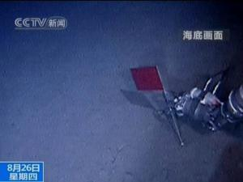

Development background

In order to promote the development of China's deep sea transportation technology, provide important high-tech equipment for the investigation and scientific research of China's ocean international seabed resources, and develop common technologies for China's deep sea exploration and seabed operations, under the organization and arrangement of the State Oceanic Administration, COMRA, as the owner, is specifically responsible for the organization and implementation of the Jiaolong manned submersible project. In conjunction with about 100 domestic scientific research institutions and enterprises such as Institute 702 of China Shipbuilding Heavy Industry Corporation, Shenyang Institute of Automation of Chinese Academy of Sciences, and Institute of Acoustics, the research team has overcome a series of technical difficulties in China's deep-sea technology field. After six years of efforts, it has completed the development of the research surface support system for manned submersible, the transformation of the test mother ship, and the selection and training of the submersible crew, thus enabling the Jiaolong to have the technical conditions to carry out sea tests.
application field
1. Carrying scientists and engineering and technical personnel into the deep sea to maneuver, hover, correctly position and set up slopes on seamounts, ridges, basins, hydrothermal vents and other complex seabed, effectively carrying out scientific investigations on marine geology, marine geophysics, marine geochemistry, marine geo-environment and marine biology.
2, "jiaolong" has the functions of deep-sea exploration, high-precision topographic survey of the seabed, detection and capture of suspicious objects, and deep-sea biological investigation. it can carry out: exploration of polymetallic nodule resources, fine topographic survey of residential areas, fixed-point acquisition of nodule samples, water samples, sediment samples, biological samples, and evaluation of coverage rate and abundance of polymetallic nodules through camera shooting and photography. Measuring the temperature of polymetallic sulfide hydrothermal vents, collecting water samples around hydrothermal vents, and storing hydrothermal water samples with fidelity; For the exploration of cobalt crust resources, core drilling and sampling operations are carried out by using submersibles, and the coverage rate and thickness of cobalt crust deposits are measured. It can perform fixed-point deployment of underwater equipment, detection of submarine cables and pipelines, and complete other complicated operations such as deep-sea exploration and salvage.